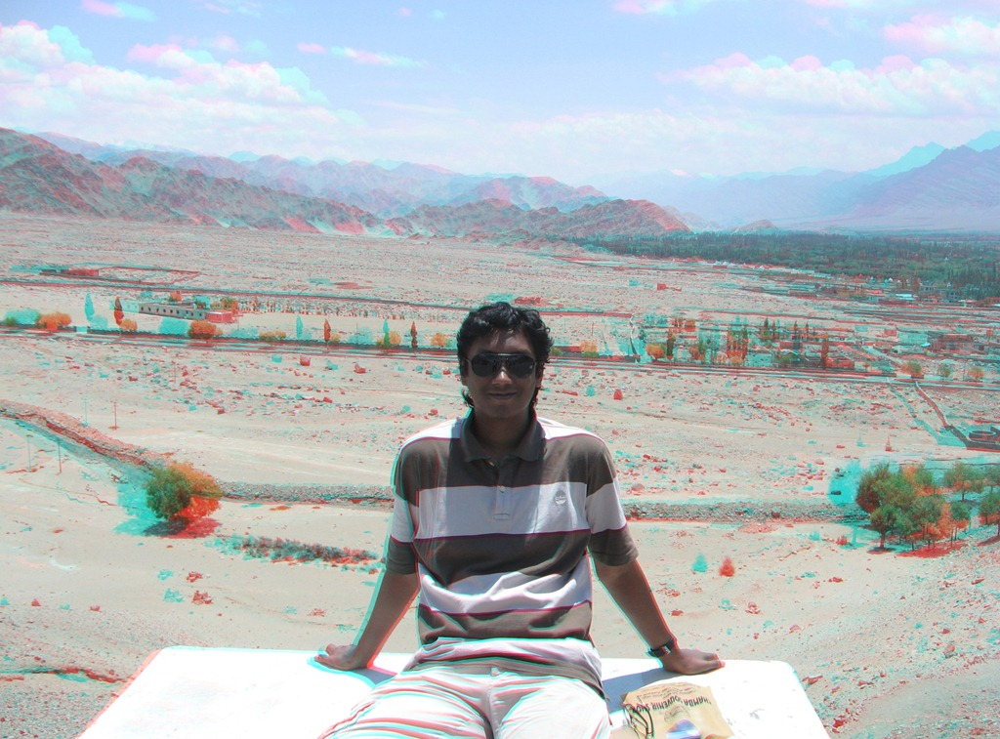
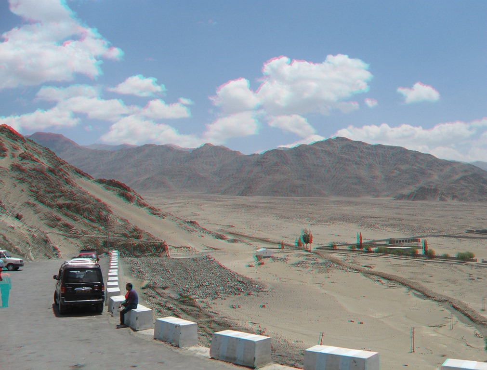
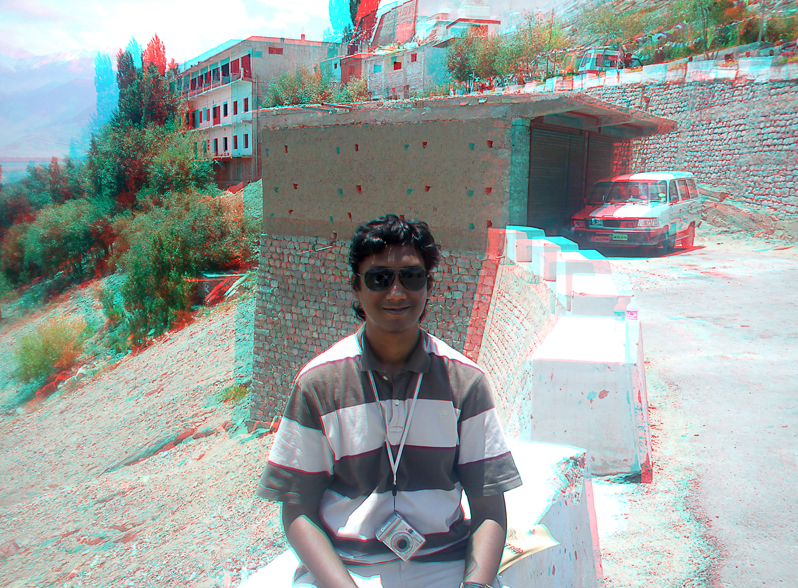

More 3D pics from my Leh trip
Remember my post about Stereoscopic 3D? I have processed more such photos on the occasion of my family trip to Leh, Ladakh. Use your typical red-blue 3D glasses to view:



If I had known they’d turn out so great, I would have made time to take more pictures. To see how 3D works and how one might make 3D photos, refer to my post about stereoscopic vision. And I compel you to use Google and Youtube for really good tutorials.
Until next time folks.